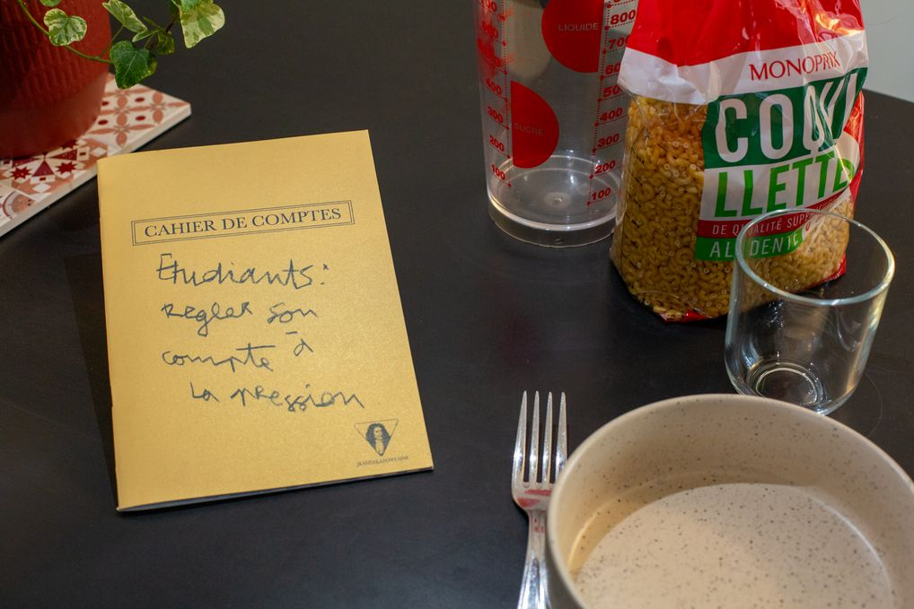
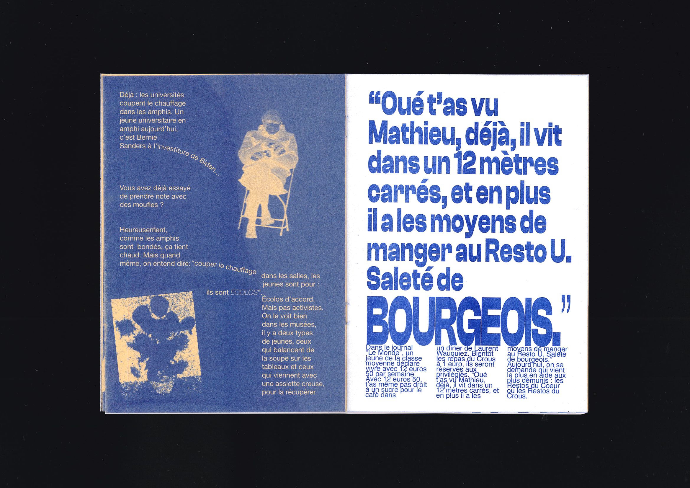

Urgence !
← retour
Avec pour objectif de se faire une place sur la scène contemporaine du fanzine, nous avons détourné l’utilisation du carnet de compte bancaire d’un étudiant.
Parmi des tableaux de suivi de budget et des pages de notes, se glissent des articles qui dénoncent l’urgence dans une couverture onéreuse.

